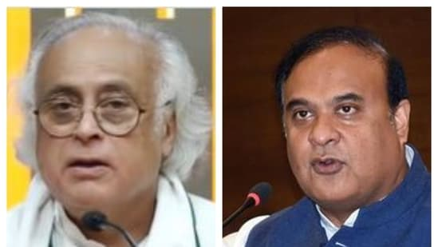

Jairam ramesh

Talking about the defection of the eight MLAs in Goa, Congress MP Jairam Ramesh on Thursday said only two types of people leave the Congress. Explaining, he said the first category includes people who have received everything from the party. Citing the example of former J&K chief minister Ghulam Nabi Azad, Jairam Ramesh said, "The 1st category includes people who have benefitted from the party. Ghulam Nabi Azad is an example of this. He received everything from the party starting from Youth Congress president to PCC president, Union Cabinet minister, general secretary etc.
Only those who have benefitted from the Congress will kick the party and leave." Also Read: Himanta has to make outrageous statements because..: Jairam Ramesh; Assam CM says, 'Who is he?'
This is article from Hindustan